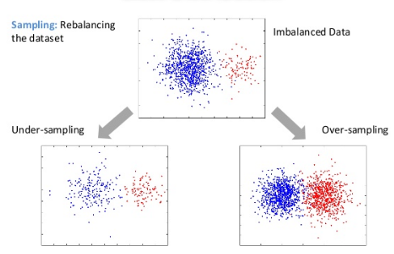
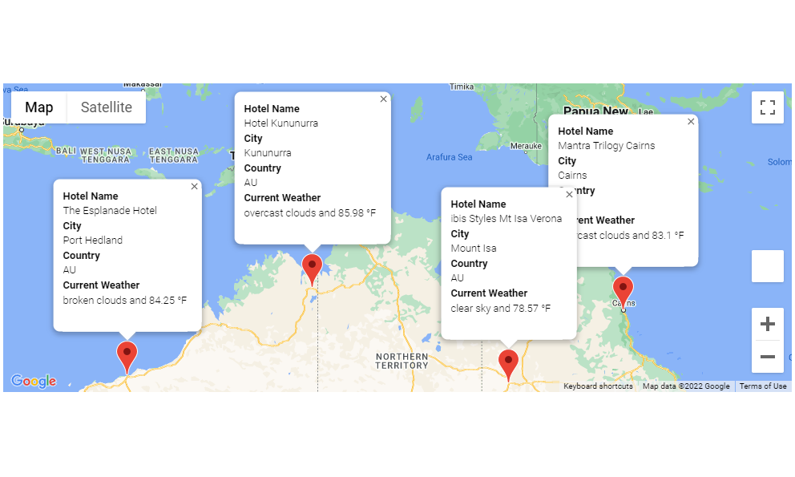
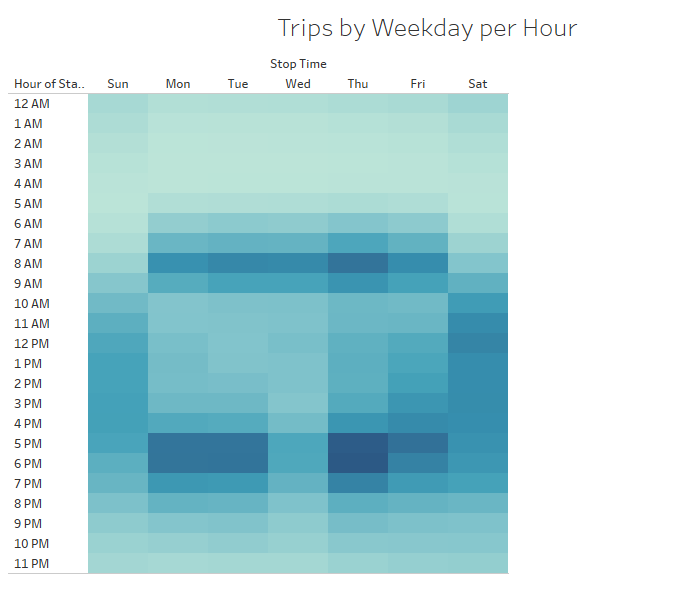

Master’s Capstone Project | Chapman University
- Developed a Restricted Boltzmann Machine operating in hyperbolic space to better capture hierarchical structure in WordNet data
- Engineered energy and sampling functions using Riemannian geometry
- Demonstrated improved reconstruction accuracy compared to Euclidean RBMs
In this project, I used a gradient boosting classifier model to predict mental health indicators from a large CDC health survey dataset. The data was first preprocessed in SQL. Then I performed preliminary feature engineering, removing outliers, binning the target, and normalizing the data. I used a feature importance plot for feature selection. The data was then split into training and testing sets and I used a machine learning library called "PyCaret" to compare 12 different binary classification models. Finally, I repeated the process making incremental changes to improve the model, with a resulting accuracy of 75.57%, up from 71.3%.

The purpose of this analysis is to compare different sampling techniques and machine learning models on a credit risk dataset. I tested the Random Over Sampler and SMOTE algorithms for oversampling, the Cluster Centroids algorithm for undersampling, and the SMOTEENN algorithm for a combination approach. I also assessed the performance of two bias-reducing models, namely the Balanced Random Forest Classifier and Easy Ensemble Classifier. To compare the effectiveness of these methods, I analyzed the accuracy scores, confusion matrices, and classification reports of each approach.

The purpose of this project was to create an application that will plan a trip for the customer given their preferred weather conditions. The application collects weather data for hundreds of cities using the Open Weather Map API, and filters them according to the customer's weather preferences. Then it uses a Google API to retrieve hotel data for each selected city. Once the customer has chosen their preferred cities, the application generates a travel route and map between them using a Google API.

The purpose of this project is to utilize Python to remove compromised data of student test scores from a school district's database and perform a corrected analysis. The analysis involved examining the corrected test scores based on size of school, amount of funding received, and classification of the school.
The purpose of this analysis is to investigate production data to identify insights that can assist the manufacturing team of a new vehicle prototype. I used multiple linear regression analysis to identify variables that predict the mpg of the vehicle. Additionally, I conducted t-tests to determine whether the manufacturing lots were statistically different from the mean.

The purpose of this analysis is to gather statistics on the employees at a large company that will be retiring from their positions within the next few years. The focus of this project was to determine the number of retiring employees by job title and identify those who are eligible for the mentorship program.

The purpose of this analysis is to investigate public data from a New York City bikesharing program. This analysis determines how bike utilization is impacted by various factors such as the day of the week, the time of day, the user's gender, and age. These findings will help inform decisions regarding pricing, repairs, and other aspects of the new bikesharing business.